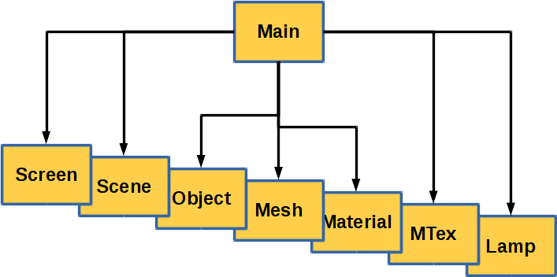
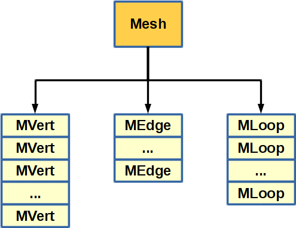
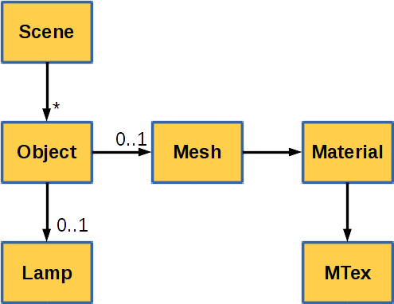
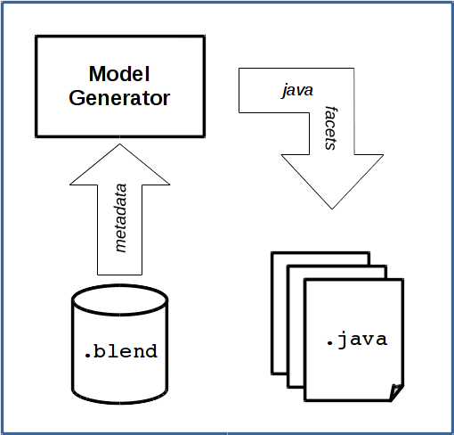
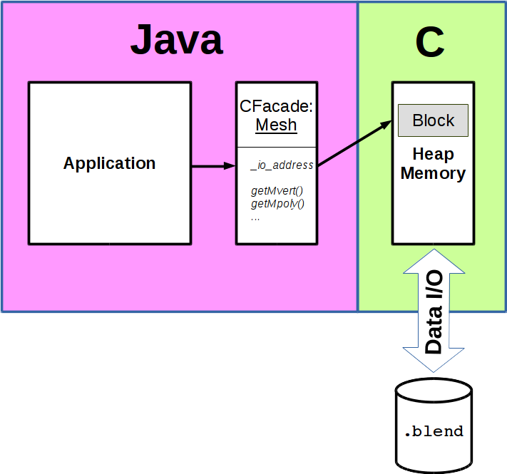

Version ${project.version}
${system.date}
Holger Machens
This is the documentation of the Java .Blend generic Blender
file import/export toolkit for Java.
Blender is an open source 3D graphics modelling and rendering environment which supports import and
export of various file formats such as FBX and Collada. Imports and exports always require
a mapping between different formats which inevitably involves compromises, resulting in
loss of information. Java .Blend aims to fill the gap for Java programmers, who want
type-safe access to all the data in a Blender file with read and write capabilities.
To achieve that, Java .Blend uses meta data which is contained in each Blender file,
and describes Blender's entire core data model. This meta data is fed to Java .Blend's
code generator, which generates Java classes for all types in Blender's data model and
thereby creates a type-safe API to access raw data in a .blend file. Thus,
there are no gaps in the model and every piece of a Blender file is available to the
API programmer.
This document contains a system specification of Java .Blend. It describes its functionality and specifies its data model. To understand the system specification, and to work with Blender files, a basic knowledge of Blender's data model and its file format is necessary. Therefore, this document starts with an introduction to Blender's DNA and its file format. The section thereafter covers the system specification which involves vital information on the type mapping between C structs and types in Blender and Java classes and types in Java .Blend. It also explains main parts of the Java .Blend runtime library (data I/O). More detailed information on parts of the system can be found in the Javadoc documentation (respective the source code documentation). At the end of this document there is a brief getting started guide for API programmers. Main purpose of this section is to point programmers in the right direction. The examples found in the download section of the website are intended to help further down the road.
Blender's core data model is called its DNA. It covers all relevant, persistent data of a
running Blender process which will be stored in a file. Data is stored in a .blend file
as plain images of the data structures in heap memory. Thus, the data model in the file is exactly the
same as in heap memory. Therefore, understanding Blender's DNA is the first part of
understanding the Blender file format. The following section is intended to provide a brief
introduction to the fundamental design principles of the Blender DNA but it does not
cover the whole data model.
Blender organises all data in so called libraries. A library holds references on
the content of one file. A library is either classified as a Main
library, which holds the content of one .blend file, or a common
Library, which holds the content of an external file, such as a texture image.

Main libraries (see Figure above) hold references on the main library elements such as a Scene,
Objects of a scene, Meshes, Material and so on but not
on detailed data such as vertices or normals of a mesh. Those details are referenced by
the main library elements themselves (see Figure below).

Further down, main library elements have references between each other to establish a scene graph (see Figure below).

On its lowest level, a Blender file consists of a header followed by a list of blocks of memory. Each block holds data of a specific type, such as a struct an array of structs or single data elements. One of the blocks contains the type information required to interpret the body of a block.
The file header (first 12 bytes of every Blender file) contains low-level information about the file:
| name | type | description |
|---|---|---|
| MAGIC | 7 byte ASCII | Content: "BLENDER". Used to identify Blender files |
| pointerSize | 1 byte ASCII | Indicates the width of an address (i.e. sizeof(void*) which is the same as sizeof(long)). '_' means 4 bytes and '-' means
8 bytes. |
| byteorder | 1 byte ASCII | Byte ordering used in the file. 'v' means little endian and 'V' means big endian. |
| version | 3 byte ASCII | Blender version the file originated from. "234" means version 2.34 . |
As you can see, all the data given in the header is represented in single bytes and therefore independent of byte order and address width of the underlying system architecture. All subsequent data following after the file header may require conversion to the data representation of the runtime environment, present.
Blocks consist of a header, which describes what type of data is stored in its body, and a body with the actual data. The block header always starts at a file position which is 4 byte aligned. The body always contains data of one specific type, which is either a struct, an array of structs or scalars or even single scalar elements.
| name | type | description |
|---|---|---|
| code | 4 byte ASCII | The block code gives a rough indication of
which purpose the data is. Main library elements always have a dedicated block code
such as "SC" for structs of type Scene or "ME"
for structs of type Mesh. The most important codes are "DNA1" which contains the
type information required to interpret any data in all the remaining blocks, and "ENDB"
which marks the end of the file. |
| size | int32 | Length of the body in bytes. |
| address | <pointerSize> | This is the address, the data was found in memory, when it was stored to disk. This information is required to restore pointers on data in this block. Please note: <pointerSize> refers to the pointer size given in the file header. |
| sdnaIndex | int32 | This is an index into the 'struct' array in
the type information. It defines the type of struct to be found in the body.
Please note that sdnaIndex==0 is ambiguous. It can either stand for
struct LinkBase or data of unknown type (e.g. an array of int).
In the latter case, type of data can be determined from pointers that
refer to it or from the context. |
| count | int32 | This is the number of instances of the type specified by 'sdnaIndex', stored in this block. |
Since each block has its original memory address stored, it is possible to restore pointers on data in blocks. But there are cases, where the pointer addresses memory which is not in the file, too.
All type information is stored in the block with code "DNA1", which
can be at any position in the file. DNA1 contains a C structure
called StructDNA or Structure DNA, which contains the
type information.
| name | type | description | |||||||||||||||||||||
|---|---|---|---|---|---|---|---|---|---|---|---|---|---|---|---|---|---|---|---|---|---|---|---|
| SDNA | 4 byte ASCII | Content: "SDNA". Indicates start of the StructDNA struct. | |||||||||||||||||||||
| NAME | 4 byte ASCII | Content: "NAME". Indicates start of the field name list section (see below). | |||||||||||||||||||||
| names_len | int32 | Array length of the following field 'names'. | |||||||||||||||||||||
| names | Array of null terminated ASCII strings | This array contains the names of the fields of all structs. A name consists of the actual name of the field and type specifications, such as if it is a pointer or an array (e.g. "*points[10]"). | |||||||||||||||||||||
| TYPE | 4 byte ASCII | Content: "TYPE". Indicates start of the field type list section (see below). | |||||||||||||||||||||
| types_len | int32 | Array length of the following field 'types'. | |||||||||||||||||||||
| types | Array of null terminated ASCII strings | This array contains the names of all types (scalar and structured) possibly used in any Blender file of that version. A type name contains the basic type only, such as int, char or LinkBase, Object, etc. |
|||||||||||||||||||||
| TLEN | 4 byte ASCII | Content: "TLEN". Indicates start of the type length section (see below). | |||||||||||||||||||||
| type_lengths | int16[<types_len>] | An array, which contains
for each type listed in 'types' above, the length of the type in bytes (e.g. 4 for
int or 32 for LinkBase). |
|||||||||||||||||||||
| STRC | 4 byte ASCII | Content: "STRC". Indicates start of the struct type information section (see below). | |||||||||||||||||||||
| structs_len | int32 | Length of the following array field 'structs' | |||||||||||||||||||||
| structs | Array of Struct instances | This is the array, which contains
the type information for any struct possibly used in a Blender file of the given
version. Each element of the array contains an instances of a struct with the
type information for a given struct.
For each struct:
|
|||||||||||||||||||||
Since all data of a Blender process is stored without any conversion, all pointers in
structs will still reference addresses in the memory of the original process. When
Blender loads a file, data will get a different address in the new process and
all pointers in that data have to be adjusted to point to the new location.
For the most part, blender uses a so-called oldnewmap which
maps old start addresses to new start address.
Please note, that the start address of a block is guaranteed to be unique but
the content may or may not overlap the address space of following blocks.
As explained, most of the blocks contain data which originates from the heap
of the blender process which created the file. In a healthy application, memory
areas on heap do not overlap each other. Accordingly, all addresses referring to data
inside of any of those areas stored in a block are unique as well. However, there
are a few exceptions since not all of the blocks existed in heap memory in the
form they are written to the file. One example is a tree structure which is
written to the file as a list to get a more compact format. The start address of the block
which contains the tree elements is artificial and does not correspond to an actual address
on heap. Blender guarantees that the start address is unique, but the address range
represented by the data in this block (i.e. the range ]start, start+length])
may or may not overlap the address range of other blocks.
A new Blender version can contain modifications in Blender DNA, but it doesn't have to.
The version specifier given in the file header of a Blender file always refers to the
version of the Blender instance, which created the file. Besides this information, a Blender
file contains a block called GLOB, which contains more detailed information
in respect to DNA model compatibility, based on additional version specifiers.
This block contains the struct FileGlobal.
A full version check in Blender considers theses four version specifiers:
VERSION. A subversion number
is Blender's equivalent to a build number. Thus, the full version specifier of
the Blender instance would be a concatenation of VERSION and
SUBVERSION.VERSION
still contains all structs and member variables of structs to cover all data given in
.blend files starting from MINVERSION up to VERSION.
SUBVERSION (i.e.
build number of the first version, which had the same DNA).
Based on this information a system can consider a given file to be compatible with Blender
in a version starting from MINVERSION, MINSUBVERSION up to
VERSION, SUBVERSION. This does not mean, that the DNA has not changed
during this period. It just means that all structs and member variables present at
MINVERSION are still available in version VERSION. Structs
can be added, member variables can be added to existing structs, types of member variables
can change and even the semantic of data can change. Thus, reading a file of one version
which is considered compatible, but not of the same version as the current DNA, is subject to
several conversion procedures before it is available to the system. Those conversion procedures
can be found in blenders source code in files
source/blender/blenloader/intern/versioning_*.c.
Blocks stored in a Bender file follow a specific order.
The common rule for blocks stored in a Blender file is, that
referenced DATA blocks always have to be placed behind the
specified block of a main library element, which references it, and before the next
main library element.
The following list summarises all block order related rules:
"DATA" blocks with
their associated detailed data. Main library elements cannot be placed between those
"DATA" blocks of another main library element. For example, a block with code "ME" containing struct Mesh
is followed by its "DATA" blocks with arrays of MVert, MLoop, MEdge
and so on. The next main library block will appear after the last "DATA" block of the previous main library element.
"DNA1" (see Type Information) can be placed anywhere in the file before the
ENDB block, but not between "DATA" blocks of a
main library element or the main library element and its "DATA" blocks."GLOB" block can be placed anywhere before the "ENDB",
but it has to respect the relationship between main library elements and their data, too."ENDB".This section gives a brief overview of the general concept behind Java .Blend.

Java .Blend basically consists of two modules:

To summarise: Based on the type information (see Type Information) of any reference Blender file, the model generator generates a data model in terms of facades which provide type-safe access to native Blender data. The generated data model in combination with the runtime data I/O module is used at runtime to access data of any Blender file of the same version. Native Blender data is kept in its format in heap memory and accessed through the facades getter and setter methods. Life cycle of native data is implicitly covered by the Java VMs garbage collection.
At development time, the model generator is used to generate a
data model for a particular Blender version, based on any
.blend file created by Blender. The Java classes
of the data model can be generated into a
source folder of a specific project or compiled and archived in
a separate Java library (.jar), to be used in
multiple projects.
Example
java -jar JavaBlend.jar -out "../myproject/src" -p "my.package.blender" -in "any-file.blend"
Once the data model is generated, it can be used in combination with the
runtime data I/O module to access any .blend file of the
same Blender version. The application opens a Blender file and instantiates
a MainLib library (see Blender DNA).
The example below shows a use case, where an application opens a
Blender file and reads the polygons of a mesh.
Example
//
// Open file and retrieve main lib
//
BlenderFile f = new BlenderFile("cube.blend");
MainLib main = new MainLib(f);
f.close();
//
// retrieve the first mesh's polygons
//
Mesh mesh = lib.getMesh();
MPoly[] polygons = mesh.getMpoly().toArray(mesh.getTotpoly());
More comprehensive examples involving materials and textures can be found in the download section of the website.
On the lowest level, the runtime I/O package has to deal with
blocks and mapping of addresses to offsets in blocks
(see package org.cakelab.blender.io). All data of a
model stored in a Blender file is kept in its native
format and converted on demand.
For all blocks which contain data originating from heap, address mapping is straight forward: Lookup the block with a start address less or equal to the address which has to be resolved and whose length is large enough to contain the address.
As explained in Section Blender Address Mapping a .blend file can contain blocks whose address range may or may not overlap the address range of other blocks. Since the data did not originate from its original location on the heap of the blender process which created the file, we call the corresponding memory area Offheap Areas. The general rule for blocks in offheap areas is, that only their start address is guaranteed to be unique. Luckily, only certain types of data are stored in offheap areas. Thus, we can differentiate between on-heap and offheap areas based on the type of data which is referenced (also stored in the block header) and apply the proper address resolution routine.
The types of blocks, which originated from offheap areas may change with different
versions of blender. Thus, the I/O subsystem contains a lookup table with lists of
struct names to be found in offheap areas for different blender versions (see package org.cakelab.blender.versions.OffheapAreas).
In case a .blend file contains blocks which overlap each other and whose struct types are not listed in the offheap areas, the block table will throw an exception during initialisation. This exception provides a list of the overlapping blocks and their struct types. This information is needed to fix the issue.
To fix an issue with overlapping blocks, you need to adapt the list of types
from offheap areas to the given blender version. Simply add a new entry in class
org.cakelab.blender.versions.OffheapAreas and run the code generation again.
Entries for offheap areas consist of a blender version number followed by a list of
struct type names of blocks, which have been found to overlap other blocks in the given blender version.
map.add(new Entry(280, new String[]{"FileGlobal", "TreeStoreElem"}));
To identify the type of data which should be moved to an offheap area, you can use the information
given by the OverlappingBlocksException you have received. Try to identify the type which solves
the most overlap conflicts at once when moved off heap and add it to the list of your new offheap area entry.
Important: Offheap areas cannot contain the type LinkBase (sdna index: 0)
because it is used for raw data as well (i.e. untyped).
Afterwards, run the code generation again, add the new code to your project and read the file again to test it. Another approach is off course to study the blender source code and identify the actual structure, which causes the issue ;)
BlenderFile is the main class to start working with a Blender file.
It controls reading and writing of Blender files and keeps
references on essential objects, such as block table and
block list (see below).
When creating new Blender files, this class is also responsible
to initialise the file with essential data, such as header, end block
and a block with type information (StructDNA, see Section Type Information
and Section StructDNA). This class does not
create the required StructDNA on its own.
Please refer to the Blender Factory
to retrieve a generated StructDNA.
When finally writing a created Blender file, this class adds the fundamental blocks DNA1,
GLOB and ENDB at their proper locations (see Block Order).
The component called block table is responsible to map addresses to blocks according to the concept explained in Section Address Resolution). Internally, the block table sorts all blocks by their base address to optimise lookup performance. To handle offheap areas transparently, the block table references a set of block tables, which contain the blocks of those offheap areas.
Blocks in a Blender file follow a specific order, as explained in Section Block Order. Since the block table reorders blocks according to their base address, the block list was added to keep track of the sequential order required in a Blender file. Internally, the block list maintains a linked list of blocks to allow fast insertion or removal of blocks.
Blocks of one Blender file establish a virtual memory space based on blocks original address and size (cf. Address Mapping). Especially when adding content to an existing or new Blender file, low level I/O has to keep track of allocated and free memory in respect to existing blocks. When inserting new blocks, the low level I/O has to check, where this new block can be placed in this virtual memory space.
The allocator is assigned to the block table and is responsible to keep track of the virtual memory space of the associated Blender files in terms of free and allocated memory regions. The allocator is not responsible to actually allocate memory in the JVM. This is a task of the block table. The allocator just finds free address space for a new block or removes address space from its internal list of allocated regions.
StructDNA, BlendModel and CMetaModel.
StructDNA, which is an exact replica of the file content in block
"DNA1" (see Section Type Information),
provides no higher functionalities, such as lookup of types.
BlendModel basically contains the same information as
StructDNA, but provides lookup capabilities.
CMetaModel, provides an enriched meta model which contains
classification of types (such as pointer, array, scalar, struct) and
detailed break downs of types into their base types (see class documentation for more information).
This section provides a specification of the type mapping of C types used in Blender files to Java types, as used in Java .Blend.
The following table contains mappings of all scalar types in Blender files (C) to Java.
| C | native size [bytes] | Java |
|---|---|---|
| char | 1 | byte |
| short | 2 | short |
| ushort | 2 | short |
| int | 4 | int |
| unsigned int | 4 | int |
| float | 4 | float |
| double | 8 | float |
| long | 4/8 | long |
| ulong | 4/8 | long |
| int64_t | 8 | long |
| uint64_t | 8 | long |
| pointers | 4/8 | long |
Java does not support unsigned integer types. Thus, every unsigned type is mapped to its signed counterpart. This has to be considered in case of overflows.
In C, the size of pointers and the scalar types long and unsigned long depend on the system architecture: 8 byte on 64 bit systems and 4 byte on 32 bit systems. Both are mapped to 64 bit in Java .Blend.
Based on the given type information from StructDNA, the model generator maps all structured types to Java facade classes. For each field of a struct a getter and setter method is generated based on type and name of the field.
If a field of a struct is of a structured type (not a pointer) then it is embedded in the struct in C. Those fields get represented by a facade of the fields type. The facade returned by the corresponding getter method provides access to the embedded struct. When assigning another object (i.e. facade) to the field through its set method, the value of that object is copied into the memory region of the embedded struct. This is exactly the same behaviour as in C.
Pointers in C can refer to different kinds of data which has to be known to understand the mapping chosen here. Generally, a pointer can be interpreted as a reference on a single data object or an array of data objects.
/* pointer on single elem */
int i;
int* pi = &i;
// same output from both printf statments
printf("%d", *pi);
printf("%d", pi[0]);
/* pointer on array of elems */
int a[] = {1,2,3};
int* pa = a;
// same output from both printf statments
printf("%d", pa[1]);
printf("%d", *(pa+1));
This small example displays a couple of issues for type mapping of
pointers to Java. Java builtin types can only deal with a few of
the functionalities provided by a pointer, such as arrays of fixed
length or references on objects. Often in C a pointer is used as reference on a set of elements in
an array, which ends with one specific terminating element, such as a null value.
Every string in C is stored that way. To access its data you have
to iterate through the array and scan for the terminating element. The only case
you can scan through data in Java using builtin types, is that you have an
array. Unfortunately, to create an array, you first need its length,
that means you can't solve it without native access to data. Another issue is,
that scalar types such as int, float, etc., cannot be referenced.
Additionally, the corresponding class types such as Integer and
Float are immutable (same for String), which means you
cannot modify their value but assign a new instance to a reference.
Hence, it is not the same if you have a reference on an
object of type Integer in Java or an int* pointer in C.
Another case are type casts applied to pointers. In C it is possible
to cast memory to any type. Best example are void* pointers
which have to be casted to a specific type when used.
Unfortunately, due to historical reasons, some pointers in Blender
data imply a cast to a
pointer of a structure of entirely different kind then the actual
struct at the referenced address. Java supports casts as long as
the target object contains the class of the reference somewhere in the
inheritance hierarchy and the reference points to the base of the
object (not somewhere inside). But in some of those cases in Blender files, the
members (fields) of the struct which is referenced by a pointer of different
type are also different. This results in the fact, that we can't just
map those pointers to base classes or interfaces of the target class.
The referenced data has to be interpreted differently based on the new type.
This brief discussion of the different functionalities of a pointer in C
shows that it is not possible to map a pointer type to a particular Java
builtin type without semantic knowledge about its use case. But the developer
using the pointer can easily determin its use case and just needs a suitable
interface which supports all the functions of a C pointer in Java. In order to
keep the data model generic Java .Blend introduces a CPointer<T>
template class to solve all those issues. A consequence of this design
decision is, that a pointer representation needs native data to operate
on (e.g. to perform type casts etc.). This also drove the fundamental
decision to keep data in memory and use facades instead of converting
all data in Java types, once it is read.
CPointer<T>This class supports all functionalities of a C pointer. The template parameter specifies its target type, which means the type of data the pointer refers to. The target type can be either a scalar, an object (i.e. facade) or a pointer again (pointer of pointer).
The following list gives an overview of its functionalities:
For more details refer to source code documentation.
Driven by the design decision on pointers, all data is kept in its native format
in heap memory. This means, although we could map arrays of fixed length to
their Java counter parts, it would be inconsistent. Instead arrays are represented by
facades of type CArrayFacade<T> class templates where the template parameter
T specifies the type of its components. Multi-dimensional arrays
simply have a component type which is an array
(e.g. CArrayFacade<CArrayFacade<T>>). CArrayFacade<T>
is derived from CPointer<T> and inherits all its functionalities.
Thus, arrays are pointers too, as in C.
The following list gives an overview of its functionalities:
The code generation framework is responsible to generate classes based on the specified type mapping.
The entire code generator is located in package org.cakelab.blender.generator
Main class of the code generator is the class ModelGenerator.
Basic procedure of the code generator is to enumerate all structs specified in the meta data received from a Blender file and forward it to a facade class generator. The code generator uses the documentation provider to retrieve JavaDoc documentation for members of generated facade classes.
When requested, the code generator also generates the utilities package with Blender Factory and class MainLib.
Main output of the code generator is the package with generated facade classes.
Each generated class corresponds to one C structure specified in
StructDNA with the same name, except of struct Object
which was renamed to BlenderObject.
Instances of facade classes are assigned to their respective block and provide getter and setter methods to access the member variables of the struct inside the block. Access to data involves conversion between data representation in the block and data representation in Java. This conversion is handled transparently on demand by the data I/O subsystem.
The optional utilities package contains code generated by
the code generator. It contains Blender version
specific code which helps in lookup (see MainLib)
of specific data in a Blender file and creation of blocks (see BlenderFactory).
Data in a Blender file is subdivided in main library elements, such as scenes, configuration data,
objects, meshes, material, etc., and data associated to them such as vertices, loops, edges, normals, etc.
The class MainLib provides references to all main library elements.
Adding data to Blender files is not an easy task. The class BlenderFactory helps in this task in various ways.
Javadoc documentation of the generated facade classes is retrieved through a documentation provider from external documentation files. Those documentation files contain a list of structs and their members with associated documentation.
Please note that the externally maintained documentation is kept in a separate repository on github and published under GPL v3 (see Section 'Licensing' on the main page for reasons).
Currently available documentation is extracted from Blender's source code via doxygen
and from it's Python API via script rna_info.py. Since this documentation
is still incomplete for the most parts, users can add more documentation manually in
terms of files of the documentation system.
This section will explain the format of the documentation.
This section specifies file format and folder layout of the documentation system.
Documenation files are written in JSON and contain Javadoc comments. The following table will explain its contents.
| key | value | type | description | ||||||||||||||||||||||||||||
|---|---|---|---|---|---|---|---|---|---|---|---|---|---|---|---|---|---|---|---|---|---|---|---|---|---|---|---|---|---|---|---|
| system | "Blender" | String | Always "Blender". | ||||||||||||||||||||||||||||
| module | "DNA" | String | Always "DNA". | ||||||||||||||||||||||||||||
| version | major.minor | String | Version string as retrieved from file header (e.g. "2.69") | ||||||||||||||||||||||||||||
| source | source of information | String | String which specifies where this information was gathered from (e.g. Python API, Blender Source Code, etc.) | ||||||||||||||||||||||||||||
| inherits | list of doc files to be inherited | Array of Strings | List of paths to doc files to be referred to, in case no other documentation was found for a given subject (e.g. struct). Inherited documentation will be overridden by included documentation or documentation found in the given doc file. | ||||||||||||||||||||||||||||
| includes | list of files to be included | Array of Strings | List of paths to doc files to be included in this documentation file. This will override previously inherited or included documentation. | ||||||||||||||||||||||||||||
| doc | Reserved for javadoc package info (e.g. package.html) | String | Place for package documentation which is not used in the current version. | ||||||||||||||||||||||||||||
| structs | list of structs | Array of JSON objects | List of structs with documentation.
|
All elements which contain Javadoc comments (i.e. all properties with key 'doc') contain text
only. That means, no slashes or stars like '/**' or '*/'. Since Javadoc accepts HTML complex constructs,
like tables or lists can be added with HTML code.
dnadoc Main folder of the DNA documentation.
<majorVer.minorVer> Version subfolder (e.g. 2.69).
dnasrc Documentation retrieved from Blender source code via doxygen.
doc.json Documentation entry file.pyapi Documentation retrieved from Blender's Python API source code via script rna_info.py.
doc.json Documentation entry file.added Manually added documentation.
doc.json Documentation entry file.DNA_ID.json Documentation for all structs in DNA_ID.hDNA_object_types.json Documentation for all structs in file DNA_object_types.h
Documentation provider is an interface providing lookup of
documentation stored in files of the documentation system.
The documentation provider automatically searches the most
appropriate documentation for a given Blender file version
combination (i.e. MINVERSION and VERSION
and their respective extensions (subversions)).
Since there are multiple sources of documentation (i.e. Python API, Blender Source Code and manually added ("Java .Blend")) the documentation provider combines them in a list of documentation entries where each source gets its own section.
This is a brief getting started guide for Java .Blend API programmers.
It covers just the basic tasks such as setting up
the development environment, and reading or writing Blender files
with help of the class BlenderFactory.
To give a more detailed view on Java .Blend, all of its features have been demonstrated in examples which can be found in the download section on the Java .Blend website.
As explained in the concept overview, working with Java .Blend requires a set of facade classes and utilities which are generated by the code generator. You can either use a pregenerated Java archive of the download section or run the code generator on your own (see Section Generating Data Model and Utilities). The latter case is necessary if there is either no pregenerated Java archive available for your Blender version or you decided to work on code generator or documentation.
To get running, add the jar of the pregenerated data model to your project:
JavaBlend-<version>-DNA-<blender-version>.jar
There is an easy way and a more complex but even more flexible way to read Blender files.
The easiest way is to use the class MainLib and the more complex involves
direct access to blocks.
MainLibBlenderFile.
Class MainLib provides access to all library elements found in the file and those provide access
to the remaining raw data through its getter methods.
BlenderFile f = new BlenderFile(new File(filename)); MainLib lib = new MainLib(f); f.close(); // all data was read by MainLib constructor Mesh mesh = lib.getMesh(); // access mesh
Reading with direct block access basically involves opening a Blender file, retrieve/search blocks,
instantiate appropriate facade classes based on the type information (sdnaIndex) given in the
block and finally access it. See example class ExampleConvert2Json for a comprehensive
example on direct block access including meta data lookup etc.
Creating or extending Blender files requires a lot of knowledge on the Blender data model. Unfortunately, the data model is quite huge and contains lots of references between elements and redundant information too. The best way to gather information on how to write a Blender file, is to study one first and use it as template.
As part of the examples, you will find a class called ExampleConvert2Json, which creates a JSON
file with all information of a Blender file in the given block order. This file
is quite easy to read and helps a lot in studying the Blender DNA.
Additionally, you will need to download the Blender sources and open the folder
source/blender/makesdna.
There, you will find various C header files with the prefix DNA_.
Those header files contain all types (structs) of the Blender DNA (i.e. all
types that can possibly exist in a Blender file). When not sure about the
meaning of a member variable of a struct, then look if there is source code
documentation and if you have an IDE which supports function call lookup etc. (i.e. Eclipse),
then use it to find contexts in which this member variable is accessed.
The example CopybufferExchange provides a full example on how to create
a Blender file for exchange via the clipboard functionality of Blender.
As mentioned, the documentation on the generated facade
classes is still poor and programmers will need to read Blenders source code
and study .blend files to gather more information.
To speed things up, everybody is encouraged to contribute to the externally
maintained documentation. This is not just about helping others, it is more about helping
each other in terms of a team effort! If we all study the
Blender source code for ourselves, we waste a tremendous
amount of work power, trying to find knowledge over and over again,
someone else already figured out! Just do the math.
The externally maintained documentation is kept in a separate repository on github. Its URL is:
https://github.com/homacs/JavaBlendDocs.git
To contribute to the documentation just fork it on github, and send me a pull request with your modifications. Contributions are reviewed and incorporate on a regular basis.
The format of the documentation is explained in Section Externally Maintained Documentation. Please check your modifications by performing a code generation run (see Section Generating Data Model and Utilities).
This section explains how to generate Java .Blend facade classes and utilities for a given Blender version. This procedure is 'almost' generic. In case you experience issues, then read the Section Troubleshooting below.
The generated code is subdivided into two packages:
The utilities package is slightly more version dependent than the facade classes. That means, the code generator may generate an incompatible utilities package in future versions of Blender while the facade classes will most certainly remain compatible and working. Therefore, the generation of the utilities package is optional.
In order to generate the facade classes you need a .blend
file saved with the version of Blender you are aiming to support
as reference. This can be any .blend
file and even the user preferences to be found in
$HOME/.config/blender/2.69/config/userpref.blend.
In order to incorporate Javadoc comments in the generated facade classes you need to download a set of Java .Blend's external documentation files either directly from the github repository or the download section of Java .Blend's website. Please note, that you have to respect the license of the documentation files if you plan to redistribute derived work. Please refer to Section 'Licensing' on the index page to learn more about the reasons.
The code generator gets started from command line.
java -jar JavaBlend-SDK-<version>.jar <options>
Alternatively, you can use the Ant build file export-DNA-lib.xml and modify it to
adjust it to your environment.
| name | type | default | description |
|---|---|---|---|
| -in | path | Blender file (always containing type information) to use as reference. | |
| -out | path | Source code folder to create the package and store the generated classes. | |
| -p | Java package name | "org.cakelab.blender" | Main package of generated code. Facades will go in subpackage 'dna' and utilities in 'utils'. |
| -u | boolean | true | Enable (true) or disable (false) generation of utilities package. |
| -c | path | "resources/dnadoc" | Main folder of the documentation system. This is optional. If no documentation is found, the code generator will still generate all code. |
| -d | boolean | true | Enable (true) or disable (false) debug output. It's currently used by the documentation system only. |
| -h | Prints brief help message and exits without code generation. |
> java -jar JavaBlend-SDK-1.0.0.jar -in "$HOME/.config/blender/2.69/config/userpref.blend" -out "../MyProject/src"
As you see, you can even use the user preferences file as reference .blend file to provide the type information needed to
generate the code.